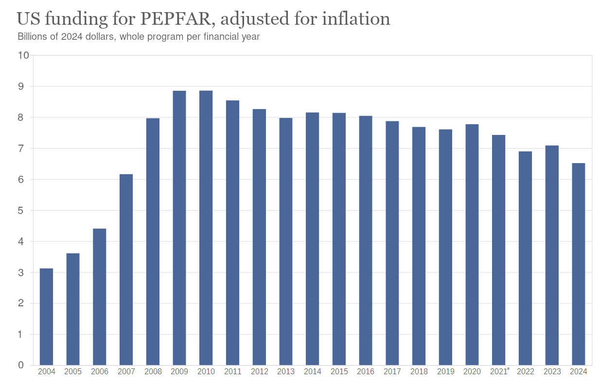
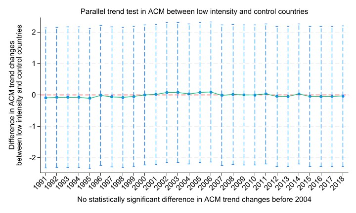

Authors:
Kelsey Piper is a journalist at Vox.
Leah Libresco Sargeant is a journalist.
Colin Aitken is a postdoctoral scholar in development economics at the University of Chicago.
Alex Randall is a foreign aid and procurement expert.
Bruce Tsai is a doctor.
Dave Kasten is a consultant.
Geoffrey Yip is a research assistant at the World Bank.
Zac Hatfield-Dodds is a fellow of the Python Software Foundation.
Keller Scholl is a PhD candidate in policy analysis.
Clara Collier is the Editor in Chief at Asterisk.
Rishi Mago is a software engineer at Amazon.
We speak only for ourselves and our consciences. None of our respective institutions have reviewed this work. Alex was formerly employed by a USAID contractor that received PEPFAR funding. She did not work directly on PEPFAR programs. We thank Emily Lin for serving as our Webmaster. We are indebted to our external reviewers, Saloni Dattani and Andrew Martin. We also thank a number of other people who gave their time to improve this work, and the people whose data and analysis we used to make it.
Executive summary (PDF) Full essay (PDF)
Executive Summary
The President’s Emergency Plan For AIDS Relief (PEPFAR) provides funding to prevent and treat HIV/AIDS in low- and middle-income countries. For the first twenty years of its history, it was popular and bipartisan, the shining jewel of US aid programs. But right now, many PEPFAR programs are paused, clinics are shuttered, and the upcoming reauthorization fight looks uncertain. The State Department, which administers PEPFAR, says the program has saved 25 million lives. We are an independent team of journalists, academics, and technologists who decided to investigate whether that was true.
Our key findings:
-
PEPFAR has saved between 7.5 and 30 million lives, at a cost between $1,500 and $10,000 per life saved. The US government is willing to spend at least a thousand times this much to save an American life.
-
In Africa, unlike in the United States, HIV/AIDS primarily affects women and children. One of the main goals of PEPFAR is to prevent “vertical transmission”, where a pregnant mother with HIV passes on her infection to her baby in utero or during delivery. PEPFAR has prevented at least 5.5 million babies from being born with HIV.
-
The number of people who die of HIV/AIDS each year has been declining since 2004–the year PEPFAR began operation. PEPFAR is a major reason for this decline.
-
PEPFAR helped decrease the cost of first-line HIV medications from $1000 a month to only $60 a year ($5 a month). Because of the declining cost of medications, PEPFAR is more cost-effective each year, and is doing more and more on a budget that has been declining in real dollars since 2009.
-
PEPFAR also offers post-exposure prophylaxis to nurses, rape victims, and others exposed to HIV, and pre-exposure prophylaxis, medications that prevent contracting HIV, to women whose husbands have HIV and other at-risk populations.
-
Over time, PEPFAR is handing off its responsibilities to the governments of the countries we’re helping, but it will take decades if we want to defeat HIV/AIDS and years if we want to not destroy the good works we have already done.
-
PEPFAR is a well-audited program. The audits we spot-checked showed 0 to 2% rates of undocumented program expenses. This compares extremely favorably to other government programs: the Medicare fraud rate, for instance, is reportedly 5-10%.
-
Controlling HIV/AIDS abroad keeps Americans safe from HIV/AIDS at home. The federal government spends $29 billion annually on medical care for Americans with HIV and AIDS, not counting insurance company spending: six billion for PEPFAR is a good deal.
-
PEPFAR advances American interests: the program is popular, appreciated, widely known, and helps us compete with China, prevent terrorism, and win allies in Africa and beyond.
We believe that President Donald Trump should build on PEPFAR’s success to advance American greatness and the interests of the American people. Since PEPFAR started in 2003, global HIV deaths switched from rising rapidly to falling dramatically, and there is substantial evidence that PEPFAR played a key role in this improvement. It’s saved millions of lives, cementing global American leadership in the process.
Introduction
On January 24, when the State Department announced a stop-work order on most foreign assistance, PEPFAR clinics shuttered. After two weeks of intense bipartisan lobbying, the State Department issued waivers intended to allow some PEPFAR programs to continue, but since PEPFAR contracts with USAID for drug orders and other functions, USAID closures have left PEPFAR services paused. This tug-of-war put PEPFAR back in the national spotlight, and it became clear that many Americans have a lot of questions about PEPFAR:
- What does PEPFAR do?
- Who, specifically, does PEPFAR help?
- How much does PEPFAR cost?
- How do we know whether PEPFAR is working?
- Why is America doing HIV/AIDS work in the first place?
Many people are rightly skeptical of the eye-popping claim that PEPFAR saved 25 million lives, mainly women and children, on a budget of $6.5 billion a year—only 0.08% of the federal budget. We found, with some caveats, that these claims are generally accurate: the budget is correct for how much America spends, and we find evidence for 7.5–30 million lives saved by PEPFAR between 2004 and 2018. Our best estimate is 19 million lives saved in that time period.
So what is PEPFAR? President George W. Bush created the President’s Emergency Plan For AIDS Relief (PEPFAR) in 2004. PEPFAR is run by the US Department of State and is overseen by the US Global AIDS Coordinator, a Senate-confirmed role reporting directly to the Secretary of State. About half of PEPFAR’s funding is spent on providing antiretroviral drugs to people with HIV, which both extend their lives and almost always prevent them from transmitting HIV to others. The remainder is spent on a number of programs, including:
- Providing other medical care to people with HIV/AIDS.
- Taking care of children who were orphaned because of HIV/AIDS.
- Keeping babies from contracting HIV from their moms during pregnancy, childbirth, and breastfeeding.
- Testing for HIV.
- Funding HIV prevention programs, such as pre-exposure prophylaxis (drugs which keep you from getting HIV), condom distribution, and prevention of domestic violence.
Congress has reauthorized PEPFAR four times since 2004, sometimes unanimously. But the 2024 PEPFAR renewal was for only one year, and many PEPFAR programs remain frozen as the State Department reviews its goals for US foreign assistance. Even if work on PEPFAR resumes, Congress will have to reauthorize PEPFAR again in 2025.
Does PEPFAR merit reauthorization? Is there significant fraud, or is our money being spent in an accountable and transparent manner on the programs Congress authorized? Does PEPFAR save as many lives as the State department estimates? Are we making progress towards a comprehensive defeat of HIV?
- Nearly all the money PEPFAR spends goes into the hands of people who need it.
We found that PEPFAR requires very good accounting controls, with every expenditure documented and demonstrated to be in line with program requirements. For this report, we read three recent Office of the Inspector General audits of PEPFAR program recipients. The three audits we reviewed found undocumented expense rates ranging from 0% to 2% of program expenses, and they demanded repayment of every dollar unaccounted for.
PEPFAR was conceived of and launched during a time of widespread skepticism about foreign aid. It had become clear that lots of foreign aid was corrupt, wasteful, or unhelpful. But the thesis behind PEPFAR was that health interventions might succeed where larger development interventions often had not. Accountability for health interventions is easier—we can tell whether or not a drug has reached a patient. Results are more measurable. And while development interventions are often premised on ideological claims that may come and go, or on theories of investment that may not hold up, health interventions have only the simple thesis that health is better than sickness and life is better than death.
- Unlike in the US, AIDS in Africa mostly affects women and children.
In America, men who engage in homosexual sex and users of hard drugs are disproportionately likely to contract HIV, spurring claims it’s a ‘lifestyle disease.’ But in sub-Saharan Africa, 63% of those living with HIV are women, and a substantial fraction are children who were born with HIV. The reasons why are debated; the fact itself is extremely well-demonstrated. Behavioral interventions, including abstinence, are important. But they don't protect babies nursing from HIV+ moms, nor sex-trafficked girls, women who wrongly believed their husbands were faithful, victims of assault, or the unborn children of women who contract HIV.
- Americans will suffer if HIV spreads uncontrollably.
At his State of the Union Address on Feb 5, 2019, President Donald Trump announced his plan to end the US HIV epidemic by reducing new infections by 90% within 10 years. But it's hard to eliminate a threat at home while it intensifies abroad. Once the United States stamped out smallpox within our borders, we discovered that air travel meant combating repeated reintroductions from abroad. Ultimately, the best way to keep Americans safe was to ensure that the disease wasn't circulating anywhere. With HIV, there is an additional risk: an intensification of HIV in Africa might mean new, antiviral resistant strains evolving. The work of nurses and doctors in Uganda and Botswana doesn't only treat local patients. It also protects America and the world from the emergence of new diseases.
- PEPFAR is a long-term commitment, but not an indefinite commitment.
We’re winning the war on AIDS. New cases are declining. Deaths are declining. Antiretroviral medications are becoming cheaper. Our victory would have been impossible without PEPFAR.
Some people ask why the countries we help can’t pay for their own citizens’ HIV treatment. In the early 2000s, HIV was a crisis. Many countries’ healthcare systems were overextended—especially since African economies were declining, life expectancy was declining, and in sub-Saharan Africa 60% of people lived in extreme poverty. Since then, those trends have been reversed, and PEPFAR has been a significant contributor to the reversal. Today, only about 35% of people in sub-Saharan Africa live in extreme poverty. Life expectancy at birth has increased from 51 to 61 years. The US is still much, much wealthier than any country where PEPFAR operates, but it is increasingly possible to work in conjunction with those countries and have their governments gradually take over the programs.
In the present day, PEPFAR has been successfully handing off responsibilities in partner nations, targeting 70% of funding through local organizations including partner country governments. Some countries, including Botswana and South Africa, have successfully transitioned to funding a majority of their own HIV efforts, with PEPFAR now playing a smaller supporting role.
- PEPFAR is cost-effective, saving lives for between $1,500 and $10,000.
Our analysis finds that PEPFAR is highly cost-effective. By comparing declines in mortality in PEPFAR countries to mortality in similar non-PEPFAR countries, we estimate that every $3,600 we spend on PEPFAR saves one life.
Even that’s an underestimate of the benefits of PEPFAR. AIDS makes people very sick before it kills them; we didn’t include anything about health in our analysis. PEPFAR has helped drive the costs of HIV medications from $1,000 a year down to $60 a year, saving even more lives. PEPFAR strengthens health systems abroad, so that they can take care of all kinds of disease outbreaks—not just HIV/AIDS. And no numerical analysis can capture the feelings of the mothers who lived long enough to see their kids grow up, or the families who don’t have to bury their children.
The Trump Administration wants to refocus American foreign aid on measurable, time-limited impact, instead of funding the nonprofit sector indefinitely. PEPFAR could build on its previous successes to be an example of “what good looks like”: efficiency, transparency, and a ruthless focus on success that combine to advance American greatness and the interests of the American people.
In his book Heroic Conservatism, Bush speechwriter Michael J. Gerson writes of PEPFAR:
In the end, America is idealistic because it is the creation of an ideal—and this has led toward engagement in the world because that ideal is universal. Whatever its costs and failures and unavoidable compromises, American idealism is ultimately a national strength.
In 2005, a friend visited a remote clinic in Zambia. She found that some people who had come to the facility—sick with AIDS—had walked for days in the hope of treatment. When asked why they had come, one Zambian woman responded, “Because we heard the Americans are going to help us.” That is a familiar refrain in history. In Nazi-occupied Europe… in the gulags of the Soviet Union… there were many who said, “We heard the Americans are going to help us.” That is what America has been, and should always be.
The American people want to know that their money is well-spent. But the American people are also compassionate. PEPFAR puts into practice our Judeo-Christian values: care for the poor and vulnerable. Using less than a tenth of a percent of the American budget, PEPFAR has saved more than 19 million lives - by some calculations much, much more. HIV is a case where aid, effectively delivered, has turned the tide and made Americans safer at home while saving millions of lives abroad. If we abandon PEPFAR, we will leave millions of women and children to die.
If you’d like more updates on the fight for PEPFAR, subscribe here (we will send fewer than 10 emails about our research and the PEPFAR reauthorization debate in Congress):
pepfarreport.org/subscribe
Note: This report may be updated as the situation changes and we receive outside feedback. Last updated 02/11/2025.
Background
What is HIV/AIDS?
Human immunodeficiency virus (HIV) is a virus which attacks the human immune system, particularly CD4+ T cells. CD4+ T cells control other parts of the immune system and signal when it’s time to mount an immune response, making them a critical part of fighting infections.
When HIV kills off enough T cells, HIV infection progresses to acquired immunodeficiency syndrome (AIDS). People with AIDS have severely weakened immune systems. That means that the everyday bacteria, viruses and parasites that pose no threat to a person with a functioning immune system can become lethal. Nearly all deaths of AIDS are deaths of such “opportunistic infections.”
People with HIV who don’t receive treatment can take up to ten years to progress to having AIDS. In this time, called the latency period, they may have few symptoms, which means they might not know they have HIV. 48% of people with AIDS will die within two years of progressing to AIDS. Babies are more vulnerable than adults: without treatment, more than half of babies who have HIV die before they turn two.
How much of a problem is HIV/AIDS?
About 40 million people have HIV. Almost two thirds of them live in sub-Saharan Africa. In 2021, an estimated 630,000 people died of HIV/AIDS, which is about 1% of the world’s deaths from all causes. 521,000 of the people who died of HIV/AIDS lived in sub-Saharan Africa. That’s about the entire population of Atlanta, Georgia. AIDS accounts for 5.4% of all deaths in sub-Saharan Africa. When PEPFAR was started, in 2003, AIDS accounted for the majority of deaths in Zimbabwe.
About 2 million (or about 7%) of worldwide HIV patients are children.
How do people catch HIV?
HIV is transmitted:
- From mother to child, primarily during pregnancy, childbirth, and breastfeeding.
- Through sexual contact.
- In sub-Saharan Africa, most people living with HIV are women, most of whom got HIV through heterosexual sex—a stark difference from the United States, where two thirds of HIV cases are men who engage in homosexual sex.
- Through unsafe injection practices, especially reuse of needles
- Through occupational accidents, when healthcare workers and first responders come into contact with blood or fluids from an HIV+ person through broken skin.
- In some studies in PEPFAR recipient countries, up to 40% of healthcare workers report occupational exposure to HIV infected fluids or needles (though less than 1% of such exposures cause an infection, and such infections are hard to trace accurately.)
How is HIV treated?
Antiretroviral therapy, or ART, is the only effective treatment for HIV. It involves administering drugs known as antiretrovirals, which prevent the virus from replicating. This reduces a patient’s viral load (the amount of virus present in their blood) and slows the progress of the disease. There are several different antiretroviral drugs available, and most patients take a combination of medications in the form of one to four pills per day. For most patients, six months of antiretroviral therapy can reduce their viral load to undetectable levels, though the therapy needs to continue for life to keep the virus in check. A patient with an undetectable viral load can’t transmit HIV.
From 1984 until 2004, global deaths from HIV rose rapidly, from around 2,000 in 1980 to 1.6 million in 2004. In the late 1990s, antiretrovirals began to turn the tide of HIV deaths in rich countries, but at that time such treatments were impossible to access in Africa. PEPFAR not only brought HIV treatment to Africa but also made it relatively affordable, even for developing-country governments. As of 2023, among all people who have HIV worldwide:
- 86% are aware of their status.
- 77% are receiving antiretroviral therapy.
- 72% have suppressed viral loads.
As a result, global deaths from HIV have been falling since their peak in 2004.
(source: ourworldindata.org/hiv-aids)
How does antiretroviral therapy save lives?
It dramatically reduces deaths from HIV
In the 1990s, the life expectancy gap between people with and people without HIV was 44.3 years; in 2011, the life expectancy gap between patients receiving antiretrovirals and people without HIV was only 7.9 years.
Patients receiving antiretroviral therapy are 70% to 90% less susceptible to tuberculosis and other opportunistic infections and cancers, which are common causes of death from HIV. People living with HIV are also at higher risk for heart, kidney, and neurological problems, and antiretroviral therapy reduces how often these problems occur.
It prevents people with HIV from infecting others
When a person with HIV consistently takes antiretrovirals, their viral load can be reduced to undetectably low levels. According to the National Institutes of Health, a person with an undetectable viral load cannot transmit HIV to their sexual partners. Having an undetectable viral load also reduces the risk of mother-to-baby HIV transmission during pregnancy, childbirth, and breastfeeding to less than 1%. As a result, treating one person with ART can prevent multiple other people, including babies, from ever being infected.
It keeps people from contracting HIV in the first place
Antiretrovirals can prevent HIV from infecting a person even after an exposure, and so can be lifesaving for rape victims, doctors or nurses exposed to HIV through needle pricks, or anyone else who knows they have been exposed to HIV and wants to avoid contracting the virus and the life-altering consequences that go with it.
A person at risk of contracting HIV (for example, someone in a stable relationship with a HIV+ partner) can also take antiretrovirals to prevent themselves from being infected with HIV. This is known as pre-exposure prophylaxis or PrEP. As of 2015, the WHO recommends that PrEP be offered to people at substantial risk, in particular women whose partners have HIV. PEPFAR has delivered on this recommendation, providing PrEP to 2.5 million people in 2024. Over 90% of people who started taking PrEP got their first dose from PEPFAR. PrEP is cheaper than treatment - PEPFAR is currently paying $30 for two-month injections.
Individuals who have high risk exposures to HIV who are not on PrEP can also be prescribed post-exposure prophylaxis (PEP). Once someone has already been exposed to HIV, such as through unprotected sex with an HIV+ person, PEP can keep them from contracting HIV. PEPFAR provides post-exposure prophylaxis in some areas, and UNAIDS considers PEP an essential component of occupational health and post-rape care. PEP can dramatically reduce the odds that a woman who is raped will deal with HIV for the rest of her life as a consequence.
Why is it specifically dangerous to interrupt ART treatment?
One of the main weaknesses of antiretroviral therapy is drug resistance: HIV is a virus and can evolve to become resistant to drugs. One of the major contributors to drug resistance is interruptions to treatment, typically caused by access issues. When ART is accessible, most patients in sub-Saharan Africa take their medication consistently (PEPFAR’s goal is for 90% of patients on ART to take it consistently enough to achieve full viral suppression, and most countries hit this target). Inconsistent treatment exposes the virus to enough antiretrovirals that it can evolve resistance inside a patient, but not enough to suppress it entirely. The patient can then pass on the resistant strain to others while their viral load is high, worsening the HIV crisis. And, of course, while unmedicated they have a much higher risk of death and other infections.
In addition to the increased risk of health complications for patients and a higher chance that they could transmit treatment-resistant strains to others, HIV drug resistance is very expensive. Second-line, third-line, and combined HIV drug regimens which combat drug resistant strains are more expensive than first-line treatments. In high income countries, second-line treatments are nearly 9x as expensive as first-line treatments. It is estimated that HIV drug resistance will cost $5.0-6.5 billion by 2030 in increased antiretroviral cost alone: while none of this is caused by PEPFAR service interruptions, keeping PEPFAR inactive risks raising this already hefty bill.
Viruses don’t care about borders. This wouldn’t be the first time we eliminated a disease worldwide because it was less expensive than continuing to guard against it. Drug-resistant strains of HIV which evolved abroad would pose a threat to vulnerable people in the United States. Suppressing HIV worldwide is the best strategy to protect people within our borders.
A brief history of PEPFAR
In January 2003, President George W. Bush proposed the President’s Emergency Plan for AIDS Relief, or PEPFAR. The program was established in May of that same year. Bush repeatedly urged his advisors to “think big”: Bush wanted a program that would defeat HIV/AIDS, not fiddle around the edges. This proposal captured the imagination of the Western world and the US Congress, gathering together a broad base of advocates ranging from U2’s Bono to US Senator Jesse Helms.
When PEPFAR was announced, many economists thought it would not be cost-effective to treat AIDS. They were wrong. Their initial concern was understandable: when PEPFAR began in 2004, first-line antiretroviral therapy cost about $1,000 per year, so treating everyone with HIV would cost tens of billions of dollars. Many experts worried that PEPFAR would lead to funding cuts for other highly cost-effective aid efforts. But the pessimistic forecasts didn’t come true. First, the Bush Administration decided to fund PEPFAR on top of existing aid efforts. Second, the massive increase in funding for antiretroviral drugs created demand that helped drive competition and innovation, and supercharged an existing race to develop cheaper, more effective generic drugs. Today, a year of first-line antiretroviral medication costs about $60.
PEPFAR has been through several changes in its 20 years of existence. In the beginning, PEPFAR concentrated on preventing HIV infections, providing antiretroviral treatment to people with HIV, and caring for children orphaned because of HIV/AIDS. Over time, PEPFAR has grown to address pediatric HIV and mother-to-child transmission, expanded its capabilities for monitoring aid delivery and progress towards targets, and, most recently, began providing PrEP in partner countries.
Currently, PEPFAR aims to reach "global 95-95-95 treatment targets": that is, 95% of people with HIV are aware of their HIV status, 95% of people diagnosed with HIV will receive antiretroviral therapy, and 95% of people who receive antiretroviral therapy will achieve viral suppression. PEPFAR set the 95-95-95 targets because the 90-90-90 targets are increasingly being met. While sufficient to dramatically slow or even stop net expansion, 90-90-90 would be very slow to end HIV altogether. Meeting the 95-95-95 target would make new HIV infections rare and dramatically slow the spread of the disease. The 95-95-95 targets put an important goal in sight for PEPFAR: ending HIV’s pandemic status (by decreasing new infections and AIDS-related deaths by 90% each) by 2030.
Over time, first-line antiretrovirals have gotten dramatically cheaper and new infections have declined. Because of these two trends, it has become easier for local governments to shoulder the burden of HIV treatment. Beginning in 2009, when PEPFAR was reauthorized under the bipartisan Lantos-Hyde Act, PEPFAR has prioritized gradually handing off its responsibilities to local governments, targeting 70% of funding through local organizations including partner country governments. South Africa has had a very successful transition to almost entirely self-funding its work.
To be clear, not all PEPFAR recipient countries are on track for that graceful transition to full local funding. In some countries, the US remains by far the predominant funder; in others, US commitments have increased over time. For example, the transition has been rocky in Nigeria, although there is still progress.
Until recently, PEPFAR was an uncontroversial, bipartisan program. Notably, the 2019 reauthorization passed by voice vote in the House and by unanimous consent in the Senate. This means that in both chambers, there was broad support and no meaningful opposition to the program.
But since taking office, the Trump Administration has expressed serious scrutiny of existing foreign aid expenditures in general: it worries that foreign aid is often distributed in a way that is not aligned with American interests and values. When the State Department paused most foreign aid spending on January 24th to evaluate whether the spending fit in with the administration’s America First goals, it shuttered PEPFAR clinics. After two weeks of intense lobbying from Republicans and Democrats alike, the State Department issued waivers that ostensibly allowed many PEPFAR programs to continue.
As of February 1st, PEPFAR’s core programs - providing antiretrovirals to people with HIV, preventing mother-to-baby transmission, and screening for HIV - have been authorized under a waiver, but funds are in many cases frozen and clinics still closed. Other PEPFAR programs, particularly pre-exposure prophylaxis or PrEP, are currently paused.
PEPFAR has, in real terms, been spending less money every year - for better and better results.

How well does PEPFAR work?
Has PEPFAR really saved millions of lives? And did it do so cost-effectively, or should we expect there to be better ways to save lives for our money? We looked into several lines of evidence, which converged to support the idea that PEPFAR has saved a large number of lives at a very low cost.
About sixty million people die each year for any reason. PEPFAR’s proponents claim it has saved more than a million lives per year of its existence. If this is really the case, we should be able to see this pattern in country-level death rates. The most comprehensive look at mortality rates we found is Gaumer et al. (2024), which looks at country-level mortality in PEPFAR countries and other low and middle-income countries between 2004 and 2018. We used this data for our main analysis, and checked it by confirming that our results aligned with two earlier studies of country-level mortality as well as a more direct cost-effectiveness analysis of PEPFAR’s antiretroviral program.
Country-level mortality data has some advantages for a cost-benefit analysis. It was usually collected by people with no connection to PEPFAR who are unlikely to bias the data to make PEPFAR look more effective. And if PEPFAR is increasing deaths some other way—for example, by taking resources away from other healthcare programs—that would show up in the mortality data. Furthermore, one of the most important ways PEPFAR would be expected to save lives is by preventing HIV transmission, but its effects on that are very hard to measure: when we tried to model it, small differences in our assumptions produced huge differences in results. Country-level mortality data is a good way to capture these important downstream effects without making strong statistical assumptions.
It would not be reasonable to just estimate PEPFAR’s effects by comparing a country’s pre-PEPFAR mortality rate to its post-PEPFAR mortality rate: mortality rates might fall (or rise!) for many other reasons. It would also not be reasonable to estimate PEPFAR’s effects by comparing a country where PEPFAR operates to a country where PEPFAR does not operate, because PEPFAR doesn’t pick where to operate randomly: it operates in countries where it’s needed more, which likely have higher death rates.
Instead, Gaumer et al. use what’s called a “difference-in-differences” (DID) design. It compares the change in the death rates among all people in a PEPFAR country with the change in the death rates in similar countries that didn’t receive PEPFAR funding. This design assumes that, if the program hadn’t happened, the change in death rates would have been the same. In the countries without PEPFAR funding, all-cause mortality (ACM) fell by about 6%, or about 0.3-0.4 deaths per 1,000 people, during the study. The estimates in Gaumer et al. (2024) are what you get if you assume that, if PEPFAR had never happened, the deaths in the countries PEPFAR worked in would have fallen by the same amount.
This assumption isn’t directly testable: we can’t observe what would have happened if PEPFAR had never happened. But we can test whether it held in the years before PEPFAR rolled out. If the mortality rates in countries that received PEPFAR funding were decreasing at the same rate as those that didn’t, we can be more confident that the same trend would have continued if PEPFAR hadn’t occurred. When we investigated, we found evidence supporting this assumption for countries which received the most PEPFAR support. These countries received more funding and typically had dedicated Country Operational Plans (COPs), i.e., yearly strategic plans for PEPFAR’s funding and programming in each partner country.
However, we found that the evidence did not convincingly support this assumption for countries which received only minimal PEPFAR support. That doesn’t mean PEPFAR didn’t save lives in those countries, but it does mean the data we have don’t let us credibly estimate the number of lives saved. For more details, please see our full cost-benefit analysis in Estimating Effects from Country-Level Mortality.
What do Gaumer et al. find? In the countries with the highest PEPFAR presence, PEPFAR reduces the number of deaths by about 15-20%. (All deaths, not just deaths from HIV.) But it could be an overestimate: this is an average decline across countries, and smaller countries were initially hit harder by HIV (and so likely benefited more from PEPFAR). After adjusting for this, we concluded that the true effect was closer to 8-11% fewer deaths in countries with the highest PEPFAR presence.
Putting this all together, we found that PEPFAR has saved between 7.5 and 30 million lives between 2004 and 2018 in the countries it’s been most active in. Within this range, our best guess is that PEPFAR saved about 19.5 million lives. For more information on how we got these numbers, see our analysis of Gaumer et al.
During those same years PEPFAR spent about $70 billion across all countries it worked in. If we just look at the saved lives we were able to document, PEPFAR costs between $1,500 and $10,000 per life saved. Within this range, our best guess is that PEPFAR costs about $3,600 per life saved. That doesn’t include lives saved in countries where PEPFAR spent less money or didn’t have a Country Operational Plan. It also doesn’t include benefits like “people who were previously too sick being able to work and support their families” or “kids growing up with their parents instead of in orphanages.” If you want to check our work, please check out our appendix on Estimating Effects from Country-Level Mortality.
Is this estimate reasonable? We looked at two earlier papers that did a similar difference-in-differences design, but with fewer countries and fewer years of data, and found that their cost-effectiveness estimates were similar to ours. Bendavid and Battacharya (2010) found that it cost roughly $2,700 to avert a death. We also looked at Bendavid et al. (2012), whose results implied a cost per death averted of roughly $6,100.
We also performed a cost-benefit analysis of the direct effects of PEPFAR’s antiretroviral program, using experimental data on antiretroviral effectiveness. This only captures direct effects on people taking the medication: it does not include people whose lives were saved because antiretrovirals stopped other people from transmitting HIV to them in the first place. Antiretroviral therapy dramatically reduces HIV spread, so this estimate likely understates the impact of PEPFAR’s antiretroviral distributions. With these caveats, we found that antiretroviral therapy costs between $5,000 to $25,000 per life saved of someone taking the medication. Within this range, our best guess is about $8,000 per life saved of someone taking antiretroviral medication. That’s over a thousand times as effective as we expect US policy to be. You can check our work in the appendix on Costs and Benefits of Antiretroviral Therapy (ART).
FAQ
What does PEPFAR do, exactly?
As of 2020, PEPFAR allocated at least:
- $2.2 billion for treatment (roughly 52% of allocated funds), which:
- Provided antiretroviral treatment to more than 20 million people.
- $663 million for care, which:
- $618 million for prevention (not including HIV testing), which:
- $271 million for governance and systems, which:
- Funded health workforce staffing to ensure that targeted countries have adequate health care workers to carry out HIV/AIDS testing and treatment programs.
- $268 million for HIV testing, which:
- Provided HIV testing services to tens of millions of people.
- $211 million for management and operations, which:
- Paid PEPFAR’s employees so they could do everything else on the list!
Why should this be a priority for Americans?
Diseases don’t respect borders: COVID came from China; Zika came from Uganda. We eliminated measles in the Western Hemisphere, and failures to eradicate it globally brought it back. If we don’t control diseases abroad, we end up having to deal with them in America. It’s much cheaper to pay nurses in Uganda and Botswana than in America, and the fewer people have AIDS, the less we spend. We’ve also made a commitment here — people had no warning that their clinics would be shut down — and a sudden withdrawal at best leaves room for Chinese influence, and at worst causes disorder and instability globally. On Feb 5, 2019, at the State of the Union Address, President Donald Trump announced an intention to end the US HIV epidemic by reducing new infections by 75% within 5 years and by 90% within 10 years. He was right to be thinking about ending the epidemic: with today’s tools, it’s achievable. But that success can’t be maintained if Americans can get HIV abroad.
The men and women of America are compassionate. They think that foreign aid for the purpose of reducing the spread of infectious diseases should be a “top priority”, including 62% of Republicans. Americans believe foreign aid helps national security. PEPFAR does something that it would be difficult for private charities to do alone; partnering with foreign governments, it delivers help at tremendous scale, lowering the cost of providing aid.
In recognition of this and the wild success of PEPFAR, Congress has reauthorized PEPFAR four times. In the last reauthorization debate, there was some concern that PEPFAR did not incorporate the Mexico City Policy, and so might fund organizations that, with other sources of funding, performed abortions. This has already been fixed by President Trump and Representative Chris Smith.
We’re on track to end AIDS. It won’t be this decade, and it almost certainly won’t be the next without novel scientific breakthroughs. But new cases are declining, and existing ones are increasingly under control. The 90-90-90 goals are sufficient to eradicate HIV, and they’ve already been achieved in 12 countries. For more information, see our argument that the need for PEPFAR is going to decline in the Appendices.
Withdrawing now doesn’t just mean that we’re giving up when a clean, popular handoff is achievable within our lifetimes: it means that we did the hard work to bring the torch almost to the finish line, and then handed it to China. The extent of “soft power” can and should be debated, but throwing successful programs into chaos offers China an opportunity to revitalize the Belt and Road Initiative, which has already used healthcare exports as a way to support Chinese AI research, and get diplomatic wins while painting the US, accurately, as an unreliable partner.
What is “soft power” anyway?
One person from a rural area who had gone on to win a Fulbright to study in the US related how, “Every time I go home, I walk by the [PEPFAR] clinic that’s always been there. And it has this little American flag there. I always think in my head, ‘Thank you, America.’” – A Former US Ambassador
Soft power won the Cold War. Our troops and our treasure and our work could contain communism, showing Western Europe that there was a better path with the Marshall Plan. But ultimately it was the people of Berlin, of Warsaw, of Moscow, who rose up, and the ordinary soldiers who were reluctant to fire upon them, that actually ended the Cold War. In the decades since, American soft power has boosted our economy: people want to buy American products, study at American universities, and hire American advisors and consultants because they look up to America.
“Soft power is the ability to obtain preferred outcomes by attraction rather than coercion or payment.” We have a duty to our troops not to get them killed unnecessarily, and a duty to the American taxpayer to not waste their money, and that means finding the most efficient way to achieve desired outcomes. When other nations recognize that America is the greatest country on earth, and want to be more like us, and so buy our exports and send their troops to fight with us, we save American money and American lives. Aid and assistance has a long history of being a source of soft power for superpowers seeking to influence other countries.
Obviously not all spending is equally good. “It advances soft power” doesn’t defend $70k in spending on Irish music festivals. It’s difficult to find this credible at advancing US soft power. It’s not clear that it nudges Ireland into alignment with the US, or that many Irish will think fondly of America for it. The evidence for many foreign aid projects is limited.
Quoting Goldsmith, Horiuchi, and Wood 2014, “PEPFAR has, indeed, positively affected how publics in recipient countries regard the US … what types of aid, under what conditions, might be effective in influencing foreign public opinion about the donor. Specifically, our theory is that foreign aid that is targeted, sustained, effective, and visible is more likely to affect mass opinion. … as Goldsmith and Horiuchi(2012) show, changes in public opinion within Country B about Country A can influence Country B’s foreign policy behavior toward Country A.” (emphasis ours). Theirs is not the only work to find this: Blair, Marty, and Roessler 2021 find that “US aid appears to weaken support for China while strengthening support for the United States … US aid increases support for the liberal democratic values that are more often associated with the United States than with China”.
To quote President Trump’s National Security Strategy from his first term, “some of the greatest triumphs of American statecraft resulted from helping fragile and developing countries become successful societies. These successes, in turn, created profitable markets for American businesses, allies to help achieve favorable regional balances of power, and coalition partners to share burdens and address a variety of problems around the world. Over time, the United States has helped create a network of states that advance our common interests and values.” That is a very straightforward model of soft power: wealthy and stable societies that get there without autocracy or explicit debts can look around, and realize that they want to be more like America than China or Russia. They’ll help us stop piracy that interferes with shipping our goods across the globe, crack down on the drug trade that corrupts our cities, and fight terrorists that threaten everyone. If we say not to use Huawei for 5G, they’ll listen to us.
Global health diplomacy isn’t a modern innovation. Reagan did it. China is doing it. We should do it.
What about abortion?
PEPFAR is covered by the Helms and Siljander Amendments. The Helms Amendment specifies that “no foreign assistance funds may be used to pay for the performance of abortion as a method of family planning or to motivate or coerce any person to practice abortions.” The Siljander Amendment further specifies that no funds provided by the United States may be used to lobby for or against abortion. Both these amendments predate PEPFAR and have bound it from the beginning.
The Helms and Siljander Amendments allow an organization which provides abortions to receive development aid as long as the funds are not spent on abortion. For that reason, in President Trump’s first term, he brought PEPFAR under the Mexico City Policy, which prohibits organizations that perform or promote abortions from receiving PEPFAR funds, even for non-abortion-related work. The goal is to prevent abortion providers from receiving funds for non-abortion-related work that would allow them to allocate more of their own funds toward performing or promoting abortion.
PEPFAR is regularly audited to ensure compliance with these restrictions. In 2021, an analysis of PEPFAR partners in Mozambique found that four nurses had performed 21 abortions while contracted with PEPFAR. These nurses had not received their compliance training, and when the problem was identified, their funds were frozen until all practitioners in the region had received compliance training and signed an attestation to not provide abortions in the future. Mozambique refunded the money that went towards these nurses’ salaries. If a Mexico City policy is built into PEPFAR’s next reauthorization there is every reason to think similar situations can be prevented in the future.
During President Biden’s term, Republican congress members objected to adding a broader goal of “promoting reproductive health” to PEPFAR’s work, out of concern it would be used to advocate for abortion. Pro-life Republicans want to place PEPFAR permanently under the Mexico City Policy during the next reauthorization so that no abortion provider may partner with PEPFAR even for unrelated work.
Does PEPFAR money get spent as reported?
The first question for any analysis of the impact of PEPFAR or any other program is whether the figures reported by PEPFAR local affiliates - about how many people they have treated and how they spent their money - are true.
In order to ensure that cases of waste and fraud are caught quickly, the Department of Health and Human Services’ Office of Inspector General (OIG) provides oversight, conducting in depth audits of PEPFAR partner organizations. The report authors reviewed three recent such reports to get a sense of base rates of fraud and abuse.
In 2020 the OIG audited ICAP, a Columbia-University affiliated PEPFAR partner that received $183,300,203 over fiscal year 2017-2018. They selected a stratified random sample of 126 transactions totalling $17,565,935 to investigate in detail and determine whether the transactions were legitimate. They found that 124 of the transactions were legitimate; 2 of the transactions, totalling $58,111 or 0.3%, were not adequately documented. The OIG did not determine whether or not they were fraudulent, but ICAP had not retained records sufficient to prove they were not fraudulent. The OIG recommended that ICAP adopt a better grant management system to avoid having inadequately documented expenditures.
In 2022, the OIG audited the National Institute of Health in Mozambique. This was a followup audit because the National Institute of Health in Mozambique had previously been found to be engaged in practices that created a high risk of waste, fraud, and abuse, including being late to submit its audits, not tracking PEPFAR funds separate from funds from other sources, and using PEPFAR funds to repay loans. The OIG looked at a sample of 30 transactions totaling $828,685 and conducted interviews to determine whether appropriate corrective steps had been taken after the previous audit. They found that their corrective measures had been implemented; of the 30 transactions, they found “four that were not fully supported and two that included costs unrelated to the PEPFAR [Cooperative Agreement], totalling $14,622.” In the end, the audit found that more than 98% of expenses were legitimate and fully documented in Mozambique, an area identified as particularly high-risk. Medicare spends around a trillion dollars and has fraud in the $50-$100 billion range, improper payments of $50 billion, or $60 billion on fraud, errors, and abuse, depending on who you listen to. Conservative estimates of total healthcare spending in America, public and private, estimate a fraud rate of 3%, and the number that can’t be fully documented is obviously higher.
In 2024, the OIG audited Thailand’s PEPFAR grants, looking at 60 transactions totaling $511,850. Every single transaction was legitimate and had adequate supportive documentation, though the OIG asked Thailand to improve its processes for retention of employee timesheets. However, these audits may not catch all forms of fraud, as they were not the more rigorous forensic audits that would verify, for example, that documentation matched up to physical items, for all covered items.
Overall, PEPFAR money is spent in accordance with program goals and US law. Audits of PEPFAR recipients find very low rates of misuse of funds, demand high standards of documentation and accounting controls from our PEPFAR partners, and follow up when they identify partner institutions at high risk of fraud. PEPFAR money is spent on PEPFAR; fraud is very rare.
Conclusion
The evidence strongly suggests that PEPFAR has been remarkably successful at achieving its core mission of reducing HIV/AIDS deaths in recipient countries, likely at a cost of between $1,500-$10,000 per life saved in the highest-impact regions. While precise estimates vary depending on methodology and assumptions, multiple independent analyses converge on finding substantial positive effects.
Difference-in-differences analyses show that PEPFAR reduces all-cause mortality by 15-20% in countries with Country Operational Plans, though this effect is smaller (4-5%) when weighted by population. This finding is particularly striking because it captures deaths from all causes, not just HIV/AIDS. Calculations from the mortality benefits of antiretrovirals also back large mortality improvements from PEPFAR.
The program has demonstrated increasingly efficient resource use over time. The cost of treatment has dropped from $1,000 a month to approximately $60 per person per year, with additional costs around delivering that treatment adding only about $40. This dramatic cost reduction makes local transition to self-funding increasingly feasible.
Rigorous audits consistently find very low rates of fraud or misuse of funds (0-2% in recent audits), indicating that resources are being deployed as intended.
The program's positive impact extends beyond its direct effects. By contributing to massive reductions in antiretroviral drug prices and building healthcare infrastructure in recipient countries, PEPFAR has created positive spillover effects that benefit even non-recipient nations. Several partner countries, including Botswana, Rwanda, and South Africa, have successfully begun transitioning to local funding and management of their HIV/AIDS programs.
However, an abrupt end to PEPFAR funding would likely have severe consequences. Treatment interruption could accelerate the evolution of drug-resistant HIV strains, which would pose a direct threat to public health globally, including in the United States. The program's current one-year authorization creates precisely this kind of uncertainty.
The data suggest that PEPFAR represents one of the most cost-effective public health interventions in recent history. We estimate that the PEPFAR program spent about $3,600 per life saved. The US government is willing to pay three thousand times this much to save an American life. The program's demonstrated ability to transition countries toward self-sufficiency while maintaining rigorous oversight suggests that continued support would further advance both humanitarian and strategic US interests.
As Congress considers PEPFAR's future, the key question is not whether the program works — the evidence for its effectiveness is robust — but how to ensure its achievements are sustained through thoughtful policy decisions about funding levels and transition timelines. The data suggest that an abrupt withdrawal of support would jeopardize two decades of progress against one of history's deadliest pandemics, while continued investment would build on a remarkable record of bipartisan success in global health.
Appendices
Transmission Benefits
One question that we attempted to answer for the sake of this report was how much PEPFAR reduced new cases of HIV. Unfortunately, the existing research is not good enough to answer this question effectively. There’s interesting theoretical modelling. There’s less interesting and less plausible modelling. There’s modelling that’s probably good and suggests that the 90-90-90 goals would be sufficient to eradicate HIV. There’s economic modelling that doesn’t seem to cover transmission well. We consulted with some experts who’d thought about this, but they’d mostly considered it in terms of the marginal effects of further HIV programs in a world with PEPFAR, and their work wasn’t very applicable to the question of what would happen if PEPFAR were shut down.
With any infectious disease, small differences in starting assumptions like how many people each sick person infects can have large effects on the end result. It’s unfortunate not to have better data on this, and it’s reason to prefer PEPFAR lives-saved estimates that are derived from country-level mortality data to lives-saved estimates that are derived from models of how PEPFAR affects transmission.
Methodology
Introduction to Global Health Programs
Many people are skeptical of foreign aid and other attempts to help the global poor—and they’re right to be! A lot of foreign aid is poorly targeted, counterproductive, or simply a waste of money. From PlayPumps to TOMS shoes to One Laptop Per Child, the news is full of well-intentioned programs that had nowhere near the effect their boosters advertised. Many prominent experts, such as William Easterly and Angus Deaton, question whether foreign aid works at all.
Development economists, charity evaluators, and other specialists perform “program evaluations,” which ask questions like:
- Does the problem we’re trying to solve actually exist?
- Why does the problem exist?
- Is the program well-implemented?
- Is the program having the effect that we expected?
- Is the program too expensive? Can some other program get the same results for less money?
In general, program evaluations are interested in finding out what the effects of a program are. The effect of a program is the difference between the outcome (what actually happened) and the counterfactual (what would have happened without the program being implemented). It’s impossible to measure the counterfactual because the counterfactual is about the same people at the same time. The counterfactual can only ever be estimated. Program evaluators have come up with many different ways of estimating the counterfactual, which we’ll talk about on the main page.
Researchers have found that global health interventions are far more likely to work than programs like PlayPumps or One Laptop Per Child. It’s easy to be wrong about whether a school system needs laptops, especially in a country far away from your own; it’s much harder to be wrong about whether a country has sky-high rates of HIV/AIDS. We don’t know much about the causes of poverty or what makes countries develop economically; we know much more about the causes of HIV and what makes HIV progress to AIDS. PlayPumps were a brand-new invention that might not work; antiretroviral medications are well-tested, well-understood, and widely used in the developed world. For this reason, the charity evaluator GiveWell—which specializes in cost-effective ways of helping the global poor—mostly recommends charities that provide healthcare.
Foreign aid often has unintended consequences: for example, giving people shoes (like TOMS shoes did) can put local shoemakers out of work; foreign aid can lead to governments prioritizing the wishes of foreign donors over the wishes of their own people. Providing healthcare has many fewer negative unintended consequences than other forms of foreign aid: providing antiretrovirals is unlikely to put small local antiretroviral manufacturers out of work. It can have some other unintended consequences, like loss of democratic accountability.
But providing healthcare also could also have positive unintended consequences. Healthy children may be more likely to go to school. Then healthy adults may be able to work more and earn more for their families. These effects can be huge. For instance, the charity evaluator GiveWell estimates that a third of the benefit of insecticide-treated bednet distribution, a treatment to avert deaths from malaria, comes from increased income.
Poverty in America is horrible: no one should be unsure how to pay for rent, food, or healthcare. But Americans are extraordinarily rich compared to the rest of the world: a person at the poverty line in the United States is in the top 15% wealthiest people in the world, even if you adjust for how far money goes in each country. Many of the world’s poorest people live in the countries PEPFAR works in: about two-fifths of people in sub-Saharan Africa live on less than $2.15 a day, adjusted for how far money goes. Since these people are so poor, they don’t have many of the opportunities Americans take for granted. Of course, the first priority of the United States government should be to help American citizens. But if you’re used to charity at home, it can be shocking how cheap it is to help people abroad.
Most of all: just throwing money at foreign aid doesn’t fix anything. But that isn’t a reason to give up—not with millions of lives at stake. If we’re careful and thoughtful, and if we actually check whether what we’re doing does any good, then we don’t have to be PlayPumps or TOMS shoes. We can concretely, robustly make things better.
Technical appendices
Cost Analysis: Antiretroviral Treatments (ARVs)
Basic ARV Medication Costs
The average cost of first-line ARV treatment is approximately $59 per person per year (PPPY), according to a 2022 PEPFAR report. About 80-85% of patients can be effectively treated with first-line ARVs alone (WHO, 2017 paper, 2016 paper).
The approximately 15-20% of patients who don't respond adequately to the preferred (first-line) treatment or who develop resistance need to move to different combinations of drugs referred to as second or third-line treatments. These treatments are considerably more expensive than first-line treatments, though exact costs vary significantly by country and specific treatment regimen. PEPFAR itself reported paying 2.3 times as much for second-line treatments compared to first-line treatments in a 2014 report.
Historical Cost Trends
The cost of ARV treatment has decreased dramatically over time. PEPFAR's total landed cost (i.e., cost including shipping and storage and administrative) for first-line ARVs has shown remarkable reduction:
- Early 2000s: >$1,100 per patient per year
- 2014: $315 per patient per year
- 2022: $59 per patient per year
Figure: Thanks to the decreasing cost of ARVs, PEPFAR has been able to have an increasing impact even as its budget has remained flat, meaning its cost-effectiveness has dramatically risen over time.
In the early 2000s HIV drugs were new and on patent. They were also very inconvenient: patients had to take multiple pills daily. Over time, we have introduced new classes of drugs and made them last longer in the body. Drug companies have collaborated on combining different drugs into a single pill in which the multiple drugs work together to make resistance harder. These have made once-a-day, single-pill treatments possible. The lower administration costs of the single-pill regime, in combination with increased competition from new generic ARVs due to patents expiring, has helped drive costs down over time.
As previously mentioned, if a patient develops resistance to first-line treatments, they need to move to second-line and in some cases third-line drugs. These typically are combinations that attack more stages of the HIV life cycle and can be newer, less convenient, and more expensive. But as first-line treatments have gotten better—along with other improvements in areas like promoting treatment adherence—fewer patients need the more expensive and less convenient second and third-line treatments.
PEPFAR itself has made antiretroviral drugs cheaper by helping countries negotiate with drug companies. Countries pool their orders for antiretroviral drugs and get large discounts. Because companies know they have a steady demand for antiretroviral drugs, they make investments such as new factories and so lower prices.
Getting a drug bought and delivered to a country is only the start of the process. That drug needs to end up in the patient’s hands for the patient to take it. This logistical process of drug distribution is one that has improved over the years as people got more experience, better communications, and better physical infrastructure. For example, PEPFAR has improved logistics efforts involving decentralized drug distribution (which makes medications available at more convenient locations beyond central clinics), efficient central procurement of ARVs, and multi-month dispensing (which allows patients to receive multiple months of medication at once, saving time and effort for both the clinics and the patients).
Comprehensive Treatment Costs
Drugs are only part of antiretroviral treatment. Patients on antiretroviral treatments need to be tested regularly to check whether their current drug regimen is working to control the virus. Laboratory testing is very cheap, ranging from $25-100 per patient per year. The countries PEPFAR works in are on the lower end of the spectrum; prices are higher in richer countries. Laboratory testing for antiretrovirals is relatively inexpensive because much of the process is automated and the testing market is very competitive.
Of course, patients also need to see healthcare providers and receive the drugs. Clinics can operate for about $20 per patient per year, but it varies depending on location and how they were set up.
Conclusion
Treating a patient with HIV in a low- or middle-income country costs around $100 per year. This cost is mostly drugs, with some additional costs for assessing the course of treatment. Costs have fallen over the past few decades, because we have more affordable antiretroviral drugs, better ways of negotiating with drug companies, and better care delivery. PEPFAR helped to lower the cost of HIV treatment.
Estimating Effects from Country-Level Mortality
PEPFAR is an extremely large-scale program: in 2024, the program provided antiretroviral therapy to more than 20 million people around the world. If this really is preventing people from dying, we should be able to see its effect in national mortality statistics.
One approach would be to compare mortality rates in countries where PEPFAR works to countries where PEPFAR does not work. If mortality rates were 20% lower in countries where PEPFAR works, we might hope to conclude that PEPFAR prevented 20% of deaths.
This wouldn’t be very convincing, because these countries may be different for other reasons: for example, countries may have been targeted for PEPFAR because they already had higher mortality rates, so a naive comparison could make it look like PEPFAR increased mortality rates. (Indeed, mortality rates are 1-3 deaths per 1000 people higher in PEPFAR countries than non-PEPFAR countries in their sample.) Alternatively PEPFAR could have chosen countries who were already on trend to reduce mortality, in which case a naive comparison could exaggerate the extent to which PEPFAR decreased mortality rates
To avoid this, the authors of the papers we looked at use a “differences-in-differences” approach. Instead of comparing death rates between PEPFAR and non-PEPFAR countries, the authors compare the difference in death rates before and after the program in PEPFAR countries to the difference in death rates before and after the program in non-PEPFAR countries.
To interpret this as causal, a “parallel trends assumption” is needed: if PEPFAR had not happened, then the change in death rates would have been the same as the non-PEPFAR countries. Since non-PEPFAR countries see an all-cause mortality reduction of about 6% (or about 0.3-0.4 deaths per 1000 people), the underlying assumption is that PEPFAR countries would have also had the same all-cause mortality reduction of 6% if the PEPFAR program did not happen.
There are plausible challenges to this: if the counterfactual to PEPFAR is uncontrolled exponential HIV spread, deaths could have grown in PEPFAR countries (in which case we would underestimate treatment effects). If the counterfactual is people adapting to HIV with changed social rules that stopped the spread, or other countries filling the PEPFAR funding gap, we could be overestimating treatment effects. Or it could be that PEPFAR and non-PEPFAR countries were just on different mortality paths to begin with, unrelated to the program.
The first two should shape how you interpret this estimate: this is the cost-effectiveness of PEPFAR relative to a counterfactual in which death rates remained parallel to non-PEPFAR countries, which is somewhere in between the worst-case exponential HIV growth scenario and the best-case “other countries stepped in and filled the PEPFAR funding gap” scenario. The third gives testable predictions, which we will examine in the data below.
Here are some other things that may be useful to keep in mind when interpreting this estimate:
- Because we are using all-cause mortality and national-level statistics, this estimate includes direct effects of all of PEPFAR’s programs on participant’s mortality, as well as effects on within-country transmission.
- If PEPFAR significantly reduced the spread of HIV from PEPFAR countries into non-PEPFAR countries, this approach will underestimate the true effects.
- This effect only looks at death rates: it excludes (for example) quality-of-life improvements from HIV treatment or economic gains from being able to work. In other contexts these improvements can be large relative to the effect on death rates. Assuming these effects are net positive, this approach will underestimate the overall effects.
- The denominator for this estimate is all PEPFAR spending, while the numerator will be lives saved in countries where PEPFAR was the most active. Each of these choices is necessary: in countries where PEPFAR was less active the data are not clear enough to estimate the numbers of lives saved, and since some PEPFAR spending was budgeted to specific needs but not specific countries we cannot fully isolate which spending might have contributed to saving lives in those countries. As a result, we will underestimate the cost-effectiveness of the program by using a conservative estimate for the cost-benefit ratio.
- This will estimate the average effect of PEPFAR’s programs over the past 20 years. This may be different from the average effect of PEPFAR’s programming in 2025
- Antiretrovirals were much more expensive in 2004, so including these years will underestimate the current cost-benefits ratio.
- PEPFAR’s programs, and the amount of funding to different priorities, have changed over time, so this approach could either overestimate or underestimate the current cost-benefit ratio.
- Overall HIV rates have decreased around the world (probably in large part due to PEPFAR). So this approach likely overestimates the short-term effects on transmission (since there are fewer people who would transmit in absence of the program) but underestimates the long-term effects on transmission, since we do not observe the counterfactual of exponential growth.
Our cost-benefit estimates are roughly the same size as those found in Bendavid et al. (2012) and Bendavid and Bhattacharya (2010) using different samples. We used Gaumer et al. (2024) for our preferred specification because it includes ten additional years of data.
Our analysis of Gaumer et al. 2024
Our data for both costs and benefits comes from Assessing the impact of the president’s emergency plan for AIDS relief on all-cause mortality. (Gaumer et al. 2024) We supplemented this with budget data from the State Department and from the World Bank.
Gaumer et al. use a differences-in-differences approach to estimate the effects of PEPFAR on all-cause mortality between 2004 and 2018, with a treatment group of 90 PEPFAR countries and a control group of 67 low and middle-income countries (LMICs) that received either no PEPFAR support or minimal PEPFAR support (less than $1 million total, or less than $.05 per capita cumulatively).
As we described above, the key assumption for an analysis like this is the parallel trends assumption: would death rates have changed by the same amount in treatment countries as they did in control countries if PEPFAR hadn’t happened?
We can’t test this directly, but we can test whether death rates were changing by the same amount in treatment and control countries before PEPFAR happened. To do so, you can create what’s called an event study plot by first picking a baseline year (in this case 1990). For each year X after that, you can compute:
(change in mortality rate in PEPFAR countries between 1990 and year X) - (change in mortality in non-PEPFAR countries between 1990 and year X)
and plot the results. The authors provide this data in supplemental materials:
A differences-in-differences approach is usually considered plausible if:
- The y-value in this plot before 2004 is essentially constant (“parallel pretrends”)
- This means before the program was implemented, the changes in death rates between PEPFAR and non-PEPFAR countries were roughly the same each year
- So the (unobservable) assumption we have to make after the program rolls out at least appears to hold before the program rolled out, which is a good sign
- Economists would typically use 2003 as the baseline year, in which case they would further ask all the y-values leading up to 2004 to be zero. In this case it’s enough that the trend be roughly constant, since the baseline year is 1990 and we don’t care about what happened in 1990 as much as what happened in the years leading up to the program.)
- The trend of effects after 2004 shows a clear pattern compatible with our understanding of the program
- In this case the program scaled up over time, and the effects of stopping infectious disease transmission are likely cumulative, so increasing treatment effects seem reasonable.
In this case one can’t statistically reject parallel pretrends, but the graph is a bit concerning: the decline in mortality in PEPFAR countries seems to start before 2004, so we might be overestimating treatment effects.
The rest of the paper’s supplement helps clarify what’s going on. (The authors don’t discuss the potential pre-trend, instead arguing that all estimates passed a parallel trends test because the pre-period coefficients are not statistically significant; this makes it unlikely that they searched across all possible specifications to find good event study plots.)
Some countries received “more” PEPFAR than others. Specifically, 31 countries received Country Operational Plans (COP). These countries received a combined 40 billion dollars during the study period, whereas all 59 other PEPFAR countries received a combined 1.1 billion dollars during the study period. Alternately, the authors rank each country from highest to lowest per-capita PEPFAR spending, and separate the 90 countries in “high” “medium” and “low” intensity groups of 30 countries.
They create separate event study plots for each:

The plots showing countries with Country Operational Plans (COPs) and countries where PEPFAR operates with high intensity are compelling event studies, so the differences-in-differences approach is plausible. There may be a very slight downward trend before treatment; this is indistinguishable from statistical noise but a skeptical reader may choose to discount the effects by roughly 10-20%.
The non-COP and middle intensity event study plots are concerning (they do not look flat before 2004, and there’s no clear change in 2004 to attribute to the program). This doesn’t rule out a PEPFAR benefit but it does mean we can’t make any confident claims about the effect in these countries. Figure F looks like a fairly compelling null result, which is not surprising because PEPFAR spending in low-intensity countries is more than 100 times lower per capita than high-intensity countries, so we should not expect to see a visible effect on the entire country’s all-cause mortality.
As a result, we will only use the estimates of the effects of PEPFAR in COP and high intensity countries, which appear to be reliable enough to perform a cost-benefit analysis. We will perform a conservative cost-effectiveness analysis using the entire cost of PEPFAR between 2004 and 2018 because out of the 70 billion dollars PEPFAR spent, only 40 billion was budgeted to specific countries. The rest was spent in ways that may have benefited multiple countries, or (in the case of research) improved the program across all countries, and therefore may have contributed to the effects we see.
Gaumer et al. report a range of treatment effects (Table 2 in the original report, adapted faithfully here):
| All-Cause Mortality Rate (deaths per, 1000) |
All PEPFAR |
COP PEPFAR |
Non-COP other PEPFAR |
High program spending intensity |
Medium program spending intensity |
Low program spending intensity |
| Mean ACM in PEPFAR countries (2004) |
10.5 |
12.6 |
9.4 |
12.3 |
9.7 |
9.5 |
| Model 1. DID model with no covariates, 1990-2018 |
-2.090*** |
-2.883*** |
-1.674*** |
-3.081*** |
-1.942*** |
-1.247*** |
| Model 2. DID model with non-financial BL covariates only, 1990-2018 |
-2.206*** |
-3.086*** |
-1.758*** |
-3.373*** |
-2.003*** |
-1.329*** |
| Model 3. DID model with non-financial and financial BL covariates, 1990-2018 |
-2.157*** |
-3.036*** |
-1.709*** |
-3.324*** |
-1.952*** |
-1.281*** |
| Model 4. DID model with non-financial BL covariates and yearly other donor spending on health covariate, 2002-2018 |
-1.814*** |
-2.809*** |
-1.302*** |
-2.986*** |
-1.324*** |
-1.208** |
| Model 5. DID model with non-financial BL covariates and yearly other donor spending and domestic spending on health covariates, 2002-2016 |
-1.072*** |
-1.854*** |
-0.629* |
-2.035*** |
-0.638 |
-0.527 |
| Approximate % reduction in ACM |
10.2–21.0% |
14.7–24.5% |
6.7–18.7% |
16.5–27.4% |
6.6–20.6% |
5.5–14.0% |
***p < 0.001
**p < 0.01
* p < 0.05
The effects are generally stable in each country group, but the point estimates change a bit depending which covariates are controlled for. Including covariates could make the control and treatment groups more similar: for example, you might control for a country’s healthcare spending if you think the differences in outcomes are being driven by PEPFAR countries having higher (or lower) healthcare spending overall. On the other hand, you might not want to control for a country’s healthcare spending if you think PEPFAR is causing countries to adjust their healthcare spending, as you’d be controlling away part of the effect!
To avoid making an arbitrary decision about which covariates are most relevant, we use the highest and lowest values in each column and give a range of possible estimates that includes both a range of possible covariates and the 95% confidence interval around each.
One final note: this paper estimates the average decline in death rates among countries. In our cost-benefit analysis, we need to know the decline in death rates among the overall population of these countries. These might not be the same: for example, India alone accounts for about half of the people in COP countries, but its HIV prevalence is an order of magnitude lower than the average COP country (See Shelton (2012) for a similar critique of previous studies.) This means our estimates might be too large, since the effects might be concentrated in smaller countries with higher HIV prevalence.
To adjust for this, we used data from the World Bank’s World Development Indicators to estimate the average HIV prevalence in 2003 and 2011 in COP and high-intensity countries, as well as the average HIV prevalence in 2003 and 2011 weighted by the 2011 populations of COP and high-intensity countries.
Another way to do this adjustment would be to use differences in per capita PEPFAR spending instead of in average HIV prevalence. This approach will likely underestimate average effects, because differences in PEPFAR spending reflect different costs of working in different countries in addition to differences in program intensity, so we would inherently underweight effects in the poorest countries. As a robustness check we estimated this approach as well, and found that it would result in effects about 10-25% lower than we estimated.
We found that this population weighting issue could lead a raw estimate to be around four times too large for COP countries or two times too large for high-intensity countries, so we scaled our estimates downwards by these factors.
We collected data on country-level PEPFAR spending, population, and effectiveness from Gaumer et al. Since they measured population in 2018, we used data from the World Bank’s World Development Indicators to revise this downward a bit based on overall African growth trends to get an estimate of the average population during the study period. We obtained data on total PEPFAR spending (including funding not given to a particular country) from the State Department.
To give a sense of how we did the cost-benefit analysis, let’s compute a headline number. We will look at high-intensity countries, which mitigates the population reweighting problem, since India did not receive high-intensity PEPFAR support, and we will use Gaumer et al.’s headline specification (without covariates.) Gaumer et al. estimate that annual all-cause mortality declined by about 3.081 deaths per 1000 people in these countries as a result of PEPFAR: to account for the population weighting issue, we adjust this down to about 1.695 deaths per 1000 people per year. We estimate that the average total population of these countries during the study period was about 761 million, so over fifteen years we calculate that about 19 million lives were saved by the program. At a total cost of 70.2 billion dollars, this means we estimate that the PEPFAR program spent about $3,600 per life saved. The US government is willing to pay three thousand times this much to save an American life.
When we accounted for the statistical uncertainty and possible choices of covariates in the Gaumer et al. analysis, we found an overall range of roughly 7.5 to 30 million lives saved at a cost of $1,500-10,000 per life saved.
If you’d like to check our work, a spreadsheet with full details can be found here:
pepfarreport.org/cost-benefit-mortality
Costs and Benefits of Antiretroviral Therapy (ART)
The previous approach had the benefit of capturing the effects of all of PEPFAR’s work in high-intensity countries, but it had several drawbacks:
- It relied on the parallel trends assumption, which may not capture the reader’s belief of what would have happened in the absence of PEPFAR
- It captures the average effect of all of PEPFAR’s programs in the past, which may differ from PEPFAR’s effect in the coming years. The latter is more relevant to the decision of whether or not to keep funding PEPFAR
In this section we describe an alternative approach, which addresses these drawbacks by focusing on a single PEPFAR program: providing antiretroviral therapy at scale.
This approach will let us find a lower bound on the impact and cost-effectiveness of one of PEPFAR’s programs. It will likely underestimate the true impact of this program:
- We can model the effect of antiretroviral therapy on patients’ own mortality, but this will not account for the effects of reduced transmission:
- ART can reduce transmission almost to zero, so this may be an important driver of effects
- The latter requires a full model of HIV spread with and without PEPFAR; our current view is that any model realistic enough to be useful will be too complex and rely on too many assumptions to explain clearly enough for a skeptical reader to decide whether to believe our estimate.
- The overall effects on transmission would be captured in the country-level mortality data, which complements this approach.
- It only looks at mortality, excluding e.g. quality-of-life or economic gains from ART
There are a few factors that could cause the approach to overestimate the impact on people receiving ART:
- Patients may adhere to ART protocols better if they know they are being studied (or if study authors have stronger incentives to ensure high compliance than other doctors are able to).
- As HIV mutates to be resistant to first-line ART medications, patients may need (more expensive) second- or third-line medications at higher rates.
This analysis will not tell us anything about the cost-effectiveness of PEPFAR’s other programs; we picked this one because of its size and prominence in PEPFAR’s array of programs.
To perform a cost-benefit analysis, we need to know:
- the all-cause mortality rate among people with HIV, are not receiving ART, and live in PEPFAR countries
- the reduction in death rates in people with HIV caused by ART
- the cost to provide a single person with ART.
The first two are difficult to find accurate data on; we will produce several independent estimates to get a sense of plausible parameter values.
The All-Cause Mortality Rate Among People with Untreated HIV in PEPFAR Countries
We looked at several sources to estimate the all-cause mortality rate among people with untreated HIV. Our primary source is Glaubius et al. 2021, whose estimates are part of the widely-used SPECTRUM model. They produce estimates for four different age groups 15-54; we used a weighted average of these estimates based on age distributions in sub-Saharan Africa to say that about 7.5% of people with untreated HIV will die each year. Excluding children (who have lower death rates, see below) likely biases this upwards a bit, and excluding the elderly (who have higher death rates) likely biases it downwards a bit. These estimates are from the whole world, not just PEPFAR countries, who likely have higher mortality rates.
We sense-checked these numbers against three other sources.
First, Zwahlen and Egger (2006) compile a variety of estimates based on CD4 T-cell counts (as discussed above in “What is HIV/AIDS,” CD4 T-cells are a part of the human immune system and get attacked by HIV/AIDS, so higher numbers are better). They estimate that median survival time for an untreated person with 200-350 CD4/ml is about five years, which translates to roughly 10-15% dying each year. This is an overestimate of the average mortality rate, since people with >350 CD4 counts will live longer. For an untreated person with <200 CD4 they provide a range of estimates from different cohorts, ranging from 7 to 38 months. If we assume it takes about 10 years for a person with HIV to reach this stage, this corresponds to roughly a median of 10.6-13.2 years to death, or about 3.5-6.5% dying each year.
Second, Desmonde et al. (2011) observe mortality among a group of untreated children in Côte d'Ivoire. They find a cumulative 5.5% mortality over eighteen months, or about 3.7% per year.
Finally, a very crude way to estimate this is to look at the mortality rate of HIV before antiretrovirals were widely available on a global scale. This may overestimate the death rate (since non-ART health care for HIV patients may have improved since then) or may underestimate the death rate (since “deaths from HIV” are only part of all-cause mortality for people with HIV). According to UNAIDS, in 1999 there were 34.3 million people living with aids, and 2.8 million deaths. This corresponds to about a 8.1% annual death rate.
Taking this into account, we will model both a 7.5% and a 5% annual death rate without antiretrovirals in our cost-benefit analysis.
How Much Does ART Reduce Death Rates?
We use what is called a proportional hazards assumption (a typical assumption in this literature): we assume that ART affects a person’s hazard of dying from any cause by some constant fraction. This is a convenient way to talk about effect sizes when patients have different underlying hazards. (For example: if ART reduces one person’s chance of dying this year from 20% to 10%, the assumption is that it would reduce someone whose chance of dying was 2% down to 1%, not to -8%.) We do not think realistic departures from this assumption are likely to meaningfully affect our results.
We were not able to find any randomized controlled trials (RCTs) giving estimates of the effects of ART on all-cause mortality, for good reason. Observational studies find that ART can literally double a 20 year old’s life expectancy, and this lifesaving effect is clear enough that a RCT would amount to killing people in the control group without learning anything that isn’t already effectively obvious.
There are, however, RCTs comparing a targeted treatment plan that provides ART to only the most critical HIV patients to an expanded plan that makes it available to anyone who is HIV+. Prior to 2015, WHO guidance was only to give ART to people whose CD4 immune cell counts are low, and these studies were conducted to see whether expanding treatment to include HIV+ people with healthy CD4 counts would still have long-term benefits. Since both groups received ART, but one group received ART for a longer period of time, these studies will give us a lower bound on the full effect of ART.
We found four RCTs on this question:
START (Strategic Timing of Anti-Retroviral Treatment) study group:
- RCT, n = 4685 across 35 countries
- Randomly assigned people to receive ART immediately, or only once their CD4 count was low
- Found that starting ART immediately reduced mortality by about 60% in the first year (hazard ratio .4)
- Ended the study early because the question had been answered and it was unethical to let more people die, so they gave the control group ART as well
TEMPRANO ANRS 12136 Study Group
- RCT, n = 2056, cross-randomized ART with IPT in Cote d’Ivoire
- Effect of ART on “death or severe HIV illness”: .56 hazard ratio
- death accounts for 23% of “death of severe HIV illness”, couldn’t find a description of direct effects on death
HPTN 052
- RCT, n = 1736 individuals with serodiscordant partners
- hazard ratio .73 on mortality, not statistically significant
Severe et al. Haiti study
- RCT, n = 816
- hazard ratio .25 on mortality
From these studies, a 50% reduction in mortality seems plausible—among the patients with CD4 counts considered healthy enough to not need treatment. The true effect of ART is almost certainly significantly stronger than this, because the control group in these studies still received ART once their CD4 counts were low enough, which was likely better than no treatment.
One might be concerned that these effects are overestimated because patients in a study are more likely to comply with the medication regimen than people in the general population. To look at this, we also found seven studies reporting data on death rates of people receiving antiretroviral therapy. On average, these studies reported about an average of 5% mortality per year, with a slightly lower mortality rate of 3.6% from the two multi-year studies in Africa. Comparing these to the 7.5% mortality rate of untreated HIV above would imply a 33% and 50% reduction in mortality from ARV.
This is likely a severe underestimate. It is dangerous to compare mortality rates across studies (with different populations), and the populations in these studies tend to be much sicker at baseline than those in Glaubius et al. For example, between 5 and 10% of people in Glaubius et al. have CD4 counts below 200 (one cutoff for diagnosing AIDS). But in Haas et al., the median person has a CD4 count of 200. Lower CD4 counts are strongly associated with increased mortality, so this is underestimating the effect of ART on mortality. On the other hand, some of these studies may undercount mortality among people who were lost to followup. We are not confident to what extent this issue would also lower the estimates in Glaubius et al., above.
For details, see “Mortality Rates on Antiretrovirals” in this spreadsheet:
pepfarreport.org/cost-benefit-antiretrovirals
In our cost-benefit analysis we will look at costs and benefits under assumptions that ARV reduces all-cause mortality by 25%, 50%, 75%, and 100% (the last of these providing an upper bound on the direct effects). Subjectively, we think 75% is a reasonable estimate given the considerations in this section, but we provide all four.
The cost to provide a single person with ART
How much does it cost to provide a single person with antiretroviral therapy? We laid out the basic costs in the Cost Analysis section above.
We assume it costs about $60 for a course of first-line antiretrovirals to one person for one year, $138 for second-line antiretrovirals, and $5,100 for third-line antiretrovirals. We also assume the overhead costs (including clinic costs and testing costs) amount to roughly $100 per year, and use the forecasts from Gupta et al. (2016) to estimate which fraction of patients are on first-, second-, and third-line antiretrovirals. (We use $100 as a conservative upper bound, in many cases the costs may be lower.)
In total, we estimate a total cost of about $293.37 per person receiving antiretroviral therapy per year.
Putting it together: Costs and Benefits from Antiretroviral Therapy
Putting these assumptions together, we find a range of estimates from about $5,220 to $23,470 per death averted, depending on the assumptions on death rates and antiretroviral effectiveness. (This range excludes the “100% reduction in mortality columns for obvious reasons.)
Our preferred set of assumptions is 5% annual mortality in the absence of ART, and 75% reduction in mortality from ART, from which we estimate $7,823.16 per death averted from ART. We caution that this is only direct lives saved: it does not take into account the fact that someone on ART is much less likely to spread HIV to other people who may then die of it.
If you like, you can check our work here:
pepfarreport.org/cost-benefit-antiretrovirals
The need for PEPFAR is (slowly) declining
Many people are legitimately and understandably concerned that PEPFAR represents an indefinite commitment. That would be a drain on the American treasury at a time of crisis. But PEPFAR isn’t an eternal expense, because full suppression of HIV is very much achievable. New HIV infections are down, like they have been every year since the late 90s. Deaths started declining in the mid-2000s. At the current rate, it would take a long time. But we have eradicated smallpox, polio is nearly gone, and with continued effort we can defeat HIV/AIDS.
The fight against HIV is getting less expensive, and therefore more cost-effective, because of our work. In 2004, when PEPFAR got started, first-line ARV medication cost about $1,000 per year—an unsustainable expense with 40 million HIV+ people worldwide. Initial infrastructure setup was substantially more expensive than that, pushing the first six months to $6,000 per person. Today, because of our efforts, a year of first-line ARV medication costs about $60 while screening, monitoring, and other healthcare costs add only $40. As first-line ARV medication gets cheaper and as the number of new infections declines, it becomes easier for local governments to shoulder the burden of HIV treatment.